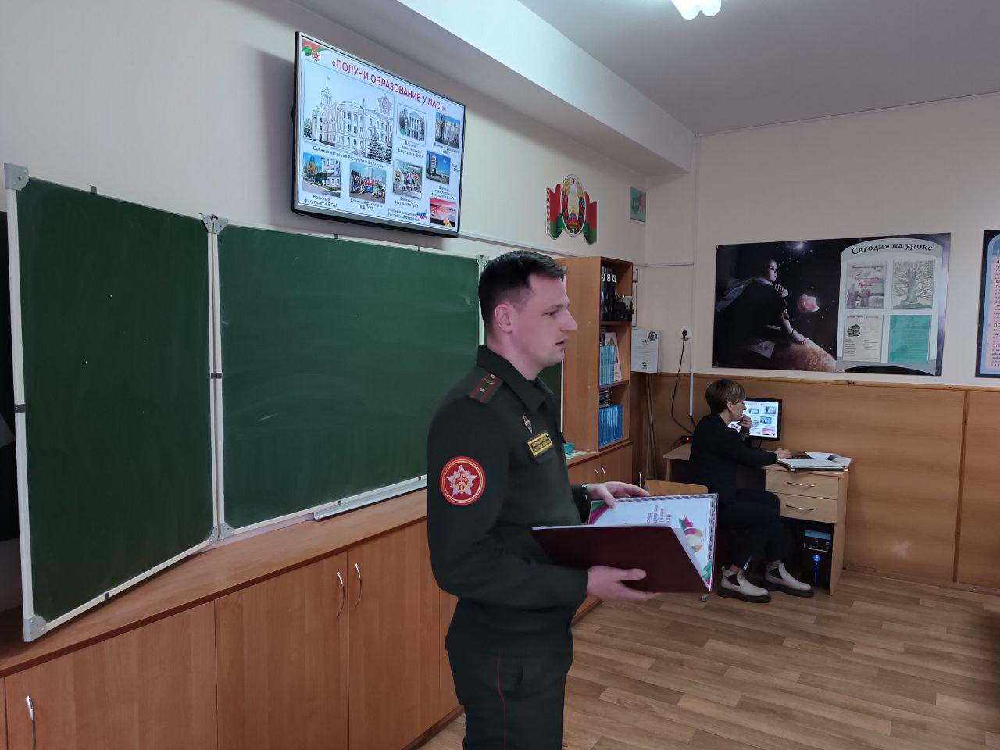
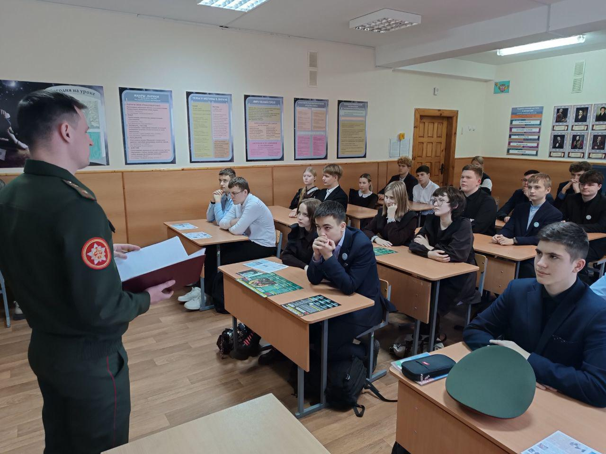
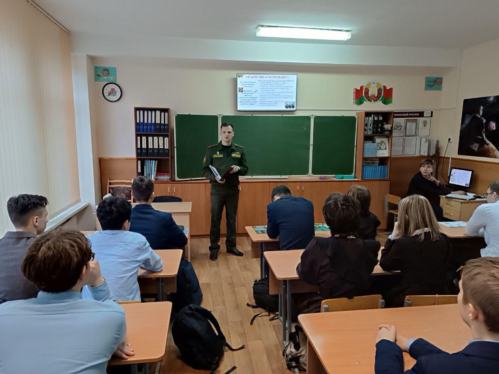

ПРОФОРИЕНТАЦИОННАЯ ВСТРЕЧА С ПРЕДСТАВИТЕЛЯМИ ГОСУДАРСТВЕННОГО УЧРЕЖДЕНИЯ «БОРИСОВСКОЕ ЭКСПЛУАТАЦИОННОЕ УПРАВЛЕНИЕ ВООРУЖЕННЫХ СИЛ»
18 ноября с учащиеся 10 «А» класса приняли участие в профориентационной встрече с представителями ГУ «Борисовское ЭУ ВС». Гостями гимназистов стали начальник управления майор Дмитрий Летун, ведущий специалист по идеологической работе Ирина Климчук, главный бухгалтер управления Марина Цицюра.

Дмитрий Сергеевич рассказал ребятам об учебных заведениях, осуществляющих подготовку офицерских кадров в интересах Вооруженных Сил Республики Беларусь, организации учебы и досуга курсантов, обеспечении денежным довольствием и вещевым имуществом, питании и проживании.

Особое внимание Дмитрий Сергеевич уделил специальностям, по которым осуществляется подготовка на военно-техническом факультете Белорусского национального технического университета. Гимназистам был представлен рекламный ролик факультета, отражающий все основные моменты жизнедеятельности курсантов. В завершении Дмитрий Сергеевич ответил на все возникшие вопросы.
